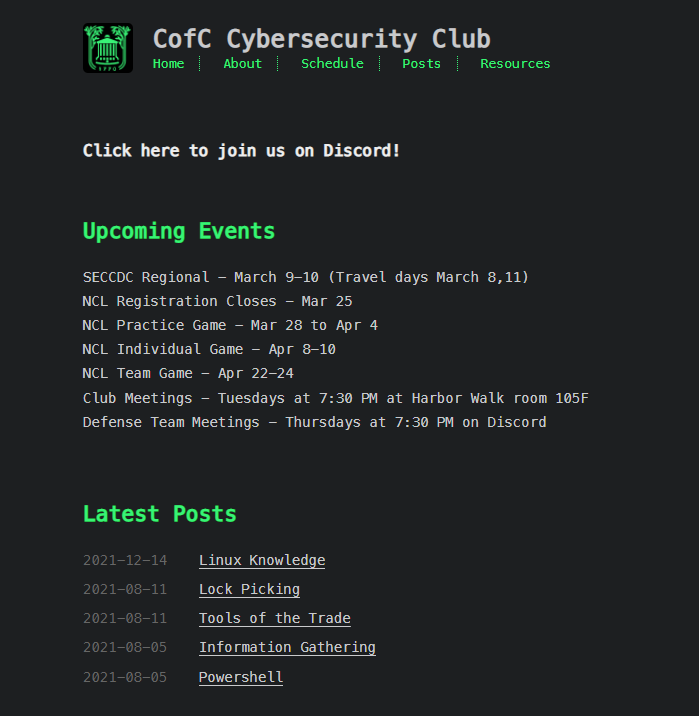
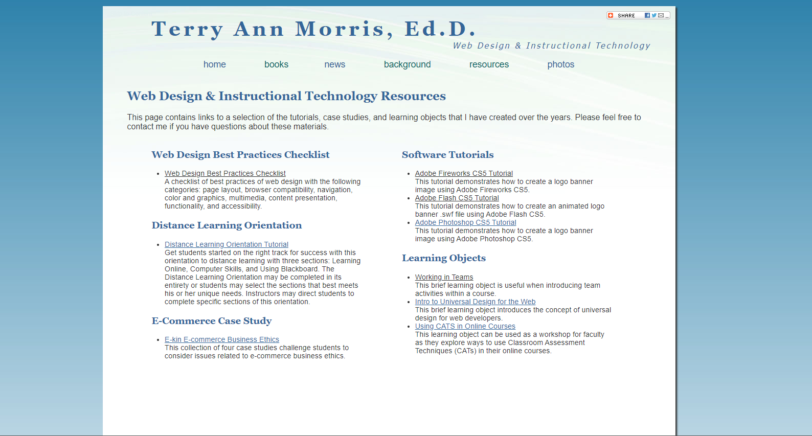
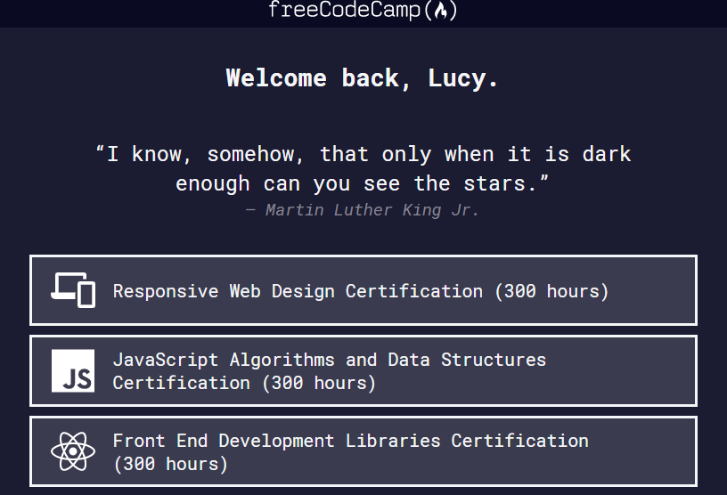

Content inspiration:

I will use this website as the content inspiration for my personal coding website. I will be primarily using the template of the resources page to list the various programs I use to code and my coding editors.
Design inspiration:

I will use this website as my design inspiration. I like how the text-intensive web page offers numerous choices.
Content inspiration:

I will use this website as my content inspiration. I want to apply the same coding skills on my Artist Website.